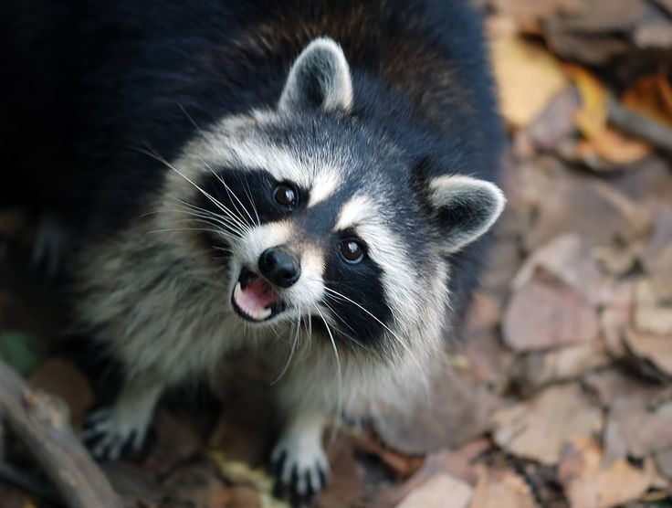
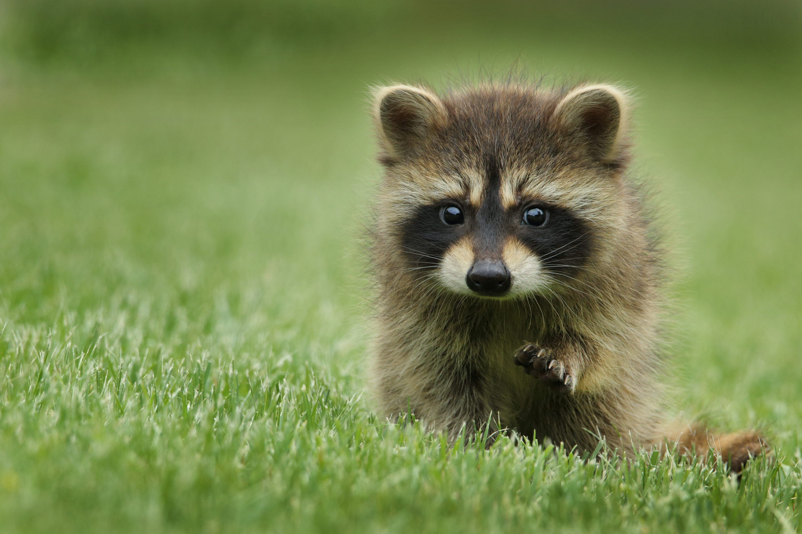
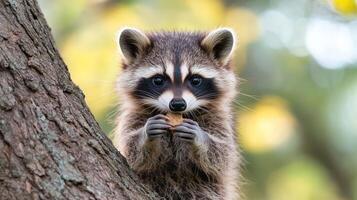

Informacion general
Los Mapaches son distinguidos por una mascara negra a través de sus ojos y una cola mullida con cuatro hasta diez anillos. Las patas delanteras aseméjese a las manos humanas delgadas y hacen los mapaches muy diestros. La coloración de los mapaches es variada con su hábitat y rangos. Son de colores gris, café rojizos y bronceados. Los Mapaches tienen una estructura rechoncha y pesan típicamente 6 o 7 kilogramos (avg. 6 Kg. o 13.2 libras). Los varones son usualmente mas pesados que los hembras por 10 a 30%. La longitud de cuerpo se extiende de 603 a 950 mm. (2 a 3 pies).

Su sentido más importante es el del tacto, ya que tienen patas delanteras hipersensibles, que también les permiten identificar objetos antes de tocarlos con vibrisas ubicadas sobre sus garras afiladas y no retráctiles. Los mapaches también se consideran muy inteligentes, ya que son capaces de entender los principios abstractos de los mecanismos de bloqueo y pueden recordar soluciones a diferentes tareas hasta por tres años.

Estos pueden levantarse sobre sus patas traseras para examinar los objetos con sus patas delanteras, lo que resulta útil, ya que así se adaptan fácilmente a otros entornos al examinarlos más detenidamente. No pueden correr rápidamente ni saltar largas distancias, sin embargo, son buenos escaladores, pueden nadar a una velocidad promedio de 5 km/h y permanecer en el agua durante varias horas.

Los mapaches no son sociales. Son nocturnos y duermen gran parte del día. Durante el invierno, tienden a dormir todavía más, pero no hibernan en el sentido estricto. Básicamente, duermen mientras sus cuerpos viven de la grasa almacenada.